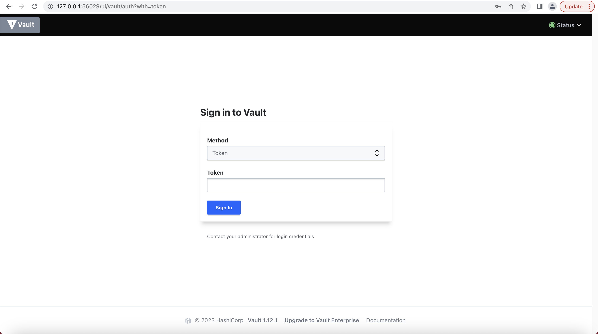
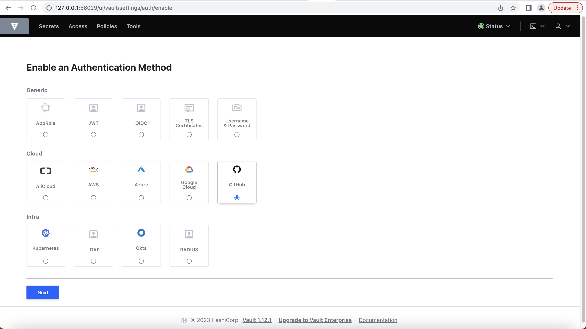
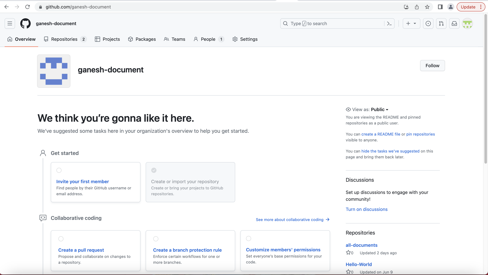
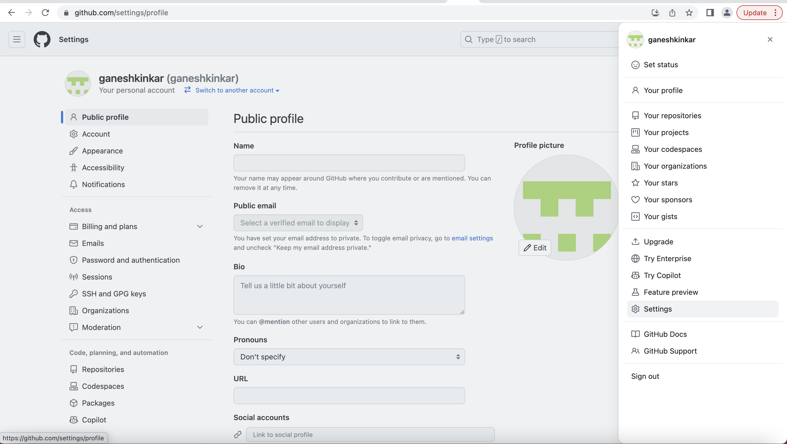
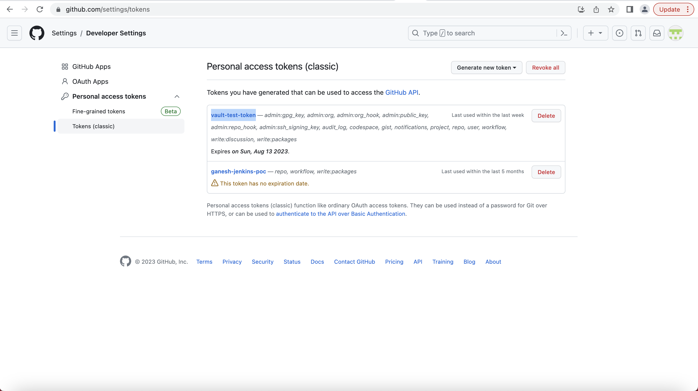

Hashicorp vault github auth#
STEP 1: Install hasicorp vault in kubernetes minikube#
$ helm repo add hashicorp https://helm.releases.hashicorp.com
"hashicorp" already exists with the same configuration, skipping
$ helm search repo hashicorp/vault
NAME CHART VERSION APP VERSION DESCRIPTION
hashicorp/vault 0.23.0 1.12.1 Official HashiCorp Vault Chart
$ helm install vault hashicorp/vault
NAME: vault
LAST DEPLOYED: Fri Jul 14 21:17:05 2023
NAMESPACE: default
STATUS: deployed
REVISION: 1
NOTES:
Thank you for installing HashiCorp Vault!
Now that you have deployed Vault, you should look over the docs on using
Vault with Kubernetes available here:
https://www.vaultproject.io/docs/
Your release is named vault. To learn more about the release, try:
$ helm status vault
$ helm get manifest vault
$ kubectl get pod,svc -n default
NAME READY STATUS RESTARTS AGE
pod/vault-0 0/1 Running 0 35s
pod/vault-agent-injector-7dcd577577-9559g 1/1 Running 0 36s
NAME TYPE CLUSTER-IP EXTERNAL-IP PORT(S) AGE
service/kubernetes ClusterIP 10.96.0.1 <none> 443/TCP 108d
service/vault ClusterIP 10.106.6.9 <none> 8200/TCP,8201/TCP 36s
service/vault-agent-injector-svc ClusterIP 10.103.13.49 <none> 443/TCP 36s
service/vault-internal ClusterIP None <none> 8200/TCP,8201/TCP 36s
$ minikube service vault
|-----------|-------|-------------|--------------|
| NAMESPACE | NAME | TARGET PORT | URL |
|-----------|-------|-------------|--------------|
| default | vault | | No node port |
|-----------|-------|-------------|--------------|
üòø service default/vault has no node port
üèÉ Starting tunnel for service vault.
|-----------|-------|-------------|------------------------|
| NAMESPACE | NAME | TARGET PORT | URL |
|-----------|-------|-------------|------------------------|
| default | vault | | http://127.0.0.1:56029 |
| | | | http://127.0.0.1:56030 |
|-----------|-------|-------------|------------------------|
[default vault http://127.0.0.1:56029
http://127.0.0.1:56030]
❗ Because you are using a Docker driver on darwin, the terminal needs to be open to run it.
Remove helm deployment
$ helm ls
NAME NAMESPACE REVISION UPDATED STATUS CHART APP VERSION
vault default 1 2023-07-14 21:23:11.745081 +0530 IST deployed vault-0.23.0 1.12.1
$ helm uninstall vault hashicorp/vault
release "vault" uninstalled
Access vault in Browser#





$ vault login -method=github token="ghp_xxxxxxxxxxxxxxxxxxxxxx"
Success! You are now authenticated. The token information displayed below
is already stored in the token helper. You do NOT need to run "vault login"
again. Future Vault requests will automatically use this token.
Key Value
--- -----
token hvs.xxxxxxxxxxxxxxxxxxxxx
token_accessor xxxxxxxxxxxxxxxxxxxxxxxxx
token_duration 768h
token_renewable true
token_policies ["default"]
identity_policies []
policies ["default"]
token_meta_org ganesh-document
token_meta_username ganeshkinkar
$ vault kv get -field=password github/dev1
test123